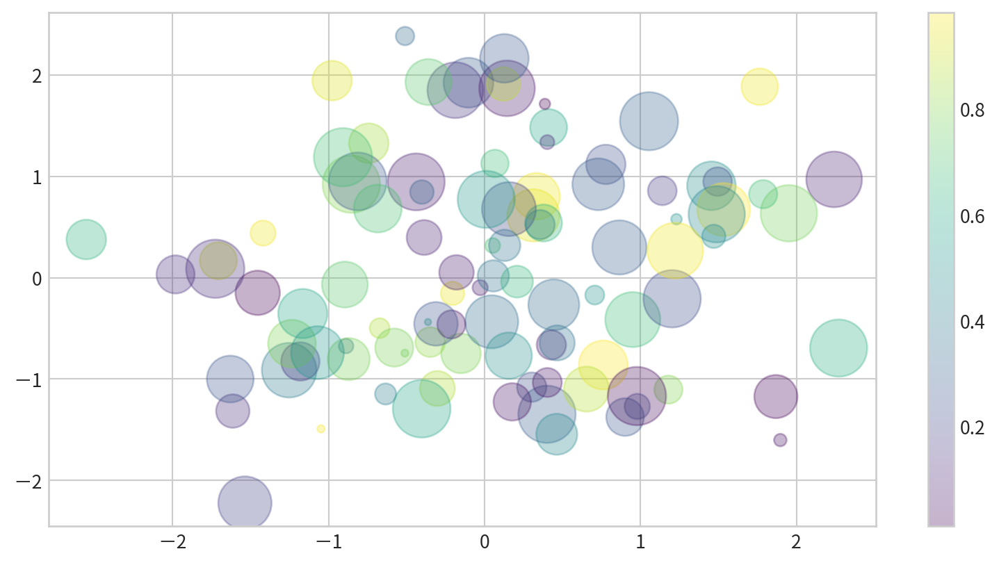

7. Visualization
Visualization
- Visualization with Matplotlib
- Simple Line Plots
- Simple Scatter Plots
- Visualizing Errors
- Density and Contour Plots
- Histograms, Binnings, and Density
- Customizing Plot Legends and Colorbars
- Multiple Subplots
Visualization with Matplotlib
What is Matplotlib?
- Matplotlib is a multi-platform data visualization library for Python
- Created by John Hunter in 2002, with version 0.1 released in 2003.
- Large user and developer base, making it a powerful and ubiquitous tool for scientific visualization.
- Despite newer visualization tools, Matplotlib remains a vital part of the data science stack.
Importing Matplotlib
The plt interface is most commonly used
Load other important library
Setting Plot Styles
Use plt.style.use('style') to set the visual style of your plots
Figure
The figure (an instance of the class plt.Figure) = container that contains all the objects representing axes, graphics, text, and labels.
How to View Your Plots - (1/3)
- From a Python script:
Useplt.show()at the end to display figures. plt.plot(x,y)

How to View Your Plots - (1/3)
How to View Your Plots - (2/3)
- From an IPython shell:
Use%matplotlibmagic command to enable interactive plotting.
plt.show()is not required.
How to View Your Plots - (3/3)
- From a Jupyter (IPython) notebook:
Use%matplotlib inlinefor static images or%matplotlib notebookfor interactive plots.
Saving Figures
Save figures using fig.savefig():
- File format is inferred from the file extension.
- Supported formats include: PNG, JPG, PDF, TIFF, and more.
{'eps': 'Encapsulated Postscript',
'jpg': 'Joint Photographic Experts Group',
'jpeg': 'Joint Photographic Experts Group',
'pdf': 'Portable Document Format',
'pgf': 'PGF code for LaTeX',
'png': 'Portable Network Graphics',
'ps': 'Postscript',
'raw': 'Raw RGBA bitmap',
'rgba': 'Raw RGBA bitmap',
'svg': 'Scalable Vector Graphics',
'svgz': 'Scalable Vector Graphics',
'tif': 'Tagged Image File Format',
'tiff': 'Tagged Image File Format',
'webp': 'WebP Image Format'}Simple Line Plots
Plotting a Simple Function
Example: Plotting a sine curve with plt.plot(x,y)
Multiple Lines in One Plot
Call plt.plot multiple times to overlay lines:
Customizing Line Color
with color parameter
plt.plot(x, np.sin(x - 0), color='blue') # by name
plt.plot(x, np.sin(x - 1), color='g') # short code (r, g, b, c, m, y, k)
plt.plot(x, np.sin(x - 2), color='0.75') # grayscale
plt.plot(x, np.sin(x - 3), color='#FFDD44') # hex code
plt.plot(x, np.sin(x - 4), color=(1.0,0.2,0.3)) # RGB tuple
plt.plot(x, np.sin(x - 5), color='chartreuse') # HTML color nameCustomizing Line Style
with linestyle parameter
plt.plot(x, x + 0, linestyle='solid')
plt.plot(x, x + 1, linestyle='dashed')
plt.plot(x, x + 2, linestyle='dashdot')
plt.plot(x, x + 3, linestyle='dotted')
# Short codes:
plt.plot(x, x + 4, linestyle='-') # solid
plt.plot(x, x + 5, linestyle='--') # dashed
plt.plot(x, x + 6, linestyle='-.') # dashdot
plt.plot(x, x + 7, linestyle=':') # dottedCustomizing Line Color and Style
Adjusting Axes Limits
plt.axis([xmin, xmax, ymin, ymax])
Adding Titles, Labels, and Legends
plt.title(), plt.xlabel(), plt.ylabel()
Adding Titles, Labels, and Legends
Add a legend for multiple lines with label parameter and plt.legend()
Hands-on - Line Plot
Setting
Hands-on - Line Plot
Data
# 空氣品質監測日平均值(一般污染物)
# https://data.moenv.gov.tw/dataset/detail/AQX_P_19
# https://drive.google.com/drive/folders/1OrMlB4hP8nnW_0bYwoHRO6DRXWNk1qvy?usp=sharing
!gdown '1P3qrYrynZhXDC13dVo5KhDXmld5OGZz1' --output 202310.csv
!gdown '1P1Kv1ZmPOYyi83DJKUIPoksM31vJJiS5' --output 202311.csv
!gdown '1P0mojOXgvVbXImnRTPQemm7dCkLDLKAC' --output 202312.csv
!gdown '1OwAf366l-iItXV4foJemw5QdMuD3JgMc' --output 202401.csvHands-on - Line Plot
Data
df202401 = pd.read_csv('202401.csv')
df202312 = pd.read_csv('202312.csv')
df202311 = pd.read_csv('202311.csv')
df202310 = pd.read_csv('202310.csv')
df_air = pd.concat([df202401,df202312,df202311,df202310],axis=0)
print(df_air.head()) "siteid" "sitename" "itemid" "itemname" "itemengname" "itemunit" \
0 80 關山 4 懸浮微粒 PM10 μg/m3
1 80 關山 5 氮氧化物 NOx ppb
2 80 關山 6 一氧化氮 NO ppb
3 80 關山 7 二氧化氮 NO2 ppb
4 80 關山 10 風速 WIND_SPEED m/sec
"monitordate" "concentration"
0 2024-01-01 33
1 2024-01-01 3.8
2 2024-01-01 0.5
3 2024-01-01 3.2
4 2024-01-01 2.2 Hands-on - Line Plot
Data Clean
new_headers = []
for header in df_air.columns: # data.columns is your list of headers
header = header.strip('"') # Remove the quotes off each header
new_headers.append(header) # Save the new strings without the quotes
df_air.columns = new_headers # Replace the old headers with the new list
print(df_air.head()) siteid sitename itemid itemname itemengname itemunit monitordate \
0 80 關山 4 懸浮微粒 PM10 μg/m3 2024-01-01
1 80 關山 5 氮氧化物 NOx ppb 2024-01-01
2 80 關山 6 一氧化氮 NO ppb 2024-01-01
3 80 關山 7 二氧化氮 NO2 ppb 2024-01-01
4 80 關山 10 風速 WIND_SPEED m/sec 2024-01-01
concentration
0 33
1 3.8
2 0.5
3 3.2
4 2.2 Hands-on - Line Plot
Data Clean
siteid int64
sitename object
itemid int64
itemname object
itemengname object
itemunit object
monitordate object
concentration object
dtype: objectHands-on - Line Plot
Data Clean
Hands-on - Line Plot
請試著呈現林口測站在2024/1/1~2024/1/15的PM2.5濃度
siteid sitename itemid itemname itemengname itemunit monitordate \
978 9 林口 33 細懸浮微粒 PM2.5 μg/m3 2024-01-01
1262 9 林口 33 細懸浮微粒 PM2.5 μg/m3 2024-01-02
3105 9 林口 33 細懸浮微粒 PM2.5 μg/m3 2024-01-03
3337 9 林口 33 細懸浮微粒 PM2.5 μg/m3 2024-01-04
4521 9 林口 33 細懸浮微粒 PM2.5 μg/m3 2024-01-05
5502 9 林口 33 細懸浮微粒 PM2.5 μg/m3 2024-01-06
7452 9 林口 33 細懸浮微粒 PM2.5 μg/m3 2024-01-07
7901 9 林口 33 細懸浮微粒 PM2.5 μg/m3 2024-01-08
8853 9 林口 33 細懸浮微粒 PM2.5 μg/m3 2024-01-09
9946 9 林口 33 細懸浮微粒 PM2.5 μg/m3 2024-01-10
11105 9 林口 33 細懸浮微粒 PM2.5 μg/m3 2024-01-11
12241 9 林口 33 細懸浮微粒 PM2.5 μg/m3 2024-01-12
13228 9 林口 33 細懸浮微粒 PM2.5 μg/m3 2024-01-13
15186 9 林口 33 細懸浮微粒 PM2.5 μg/m3 2024-01-14
15416 9 林口 33 細懸浮微粒 PM2.5 μg/m3 2024-01-15
concentration DateTime
978 24.0 2024-01-01
1262 13.0 2024-01-02
3105 15.1 2024-01-03
3337 15.9 2024-01-04
4521 23.5 2024-01-05
5502 20.6 2024-01-06
7452 20.2 2024-01-07
7901 12.6 2024-01-08
8853 5.8 2024-01-09
9946 27.3 2024-01-10
11105 19.7 2024-01-11
12241 10.1 2024-01-12
13228 4.5 2024-01-13
15186 6.3 2024-01-14
15416 19.2 2024-01-15 Hands-on - Line Plot
請試著呈現林口測站在2024/1/1~2024/1/15的PM2.5濃度

Hands-on - Line Plot - Seaborn
sns.lineplot(x,y)
Simple Scatter Plots
What is a Scatter Plot?
- A scatter plot displays individual data points as dots, circles, or other shapes, rather than connecting them with lines.
- Useful for visualizing the relationship between two or more variables.
Scatter Plots with plt.plot()
plt.plot(x,y,marker,color)

Scatter Plots - marker shape
'o', '.', ',', 'x', '+', 'v', '^', '', 's', 'd' …
Line styles and marker shape
Combine marker and line styles for more complex plots
Line styles and marker shape
Customize markers and lines with additional arguments

Scatter Plots with plt.scatter
plt.scatter() allowing individual control over each point’s size, color, and other properties.
with varying color and size - Bubble chart
Data:
Parameters:
c: color for each pointssizealphatransparencycmapcolormap (more details later)
with varying color and size - Bubble chart
Visualizing Multidimensional Data
Example: Iris dataset, visualizing four features at once.
Data:
# !pip3 install scikit-learn
from sklearn.datasets import load_iris
iris = load_iris()
features = iris.data.T
print(features)[[5.1 4.9 4.7 4.6 5. 5.4 4.6 5. 4.4 4.9 5.4 4.8 4.8 4.3 5.8 5.7 5.4 5.1
5.7 5.1 5.4 5.1 4.6 5.1 4.8 5. 5. 5.2 5.2 4.7 4.8 5.4 5.2 5.5 4.9 5.
5.5 4.9 4.4 5.1 5. 4.5 4.4 5. 5.1 4.8 5.1 4.6 5.3 5. 7. 6.4 6.9 5.5
6.5 5.7 6.3 4.9 6.6 5.2 5. 5.9 6. 6.1 5.6 6.7 5.6 5.8 6.2 5.6 5.9 6.1
6.3 6.1 6.4 6.6 6.8 6.7 6. 5.7 5.5 5.5 5.8 6. 5.4 6. 6.7 6.3 5.6 5.5
5.5 6.1 5.8 5. 5.6 5.7 5.7 6.2 5.1 5.7 6.3 5.8 7.1 6.3 6.5 7.6 4.9 7.3
6.7 7.2 6.5 6.4 6.8 5.7 5.8 6.4 6.5 7.7 7.7 6. 6.9 5.6 7.7 6.3 6.7 7.2
6.2 6.1 6.4 7.2 7.4 7.9 6.4 6.3 6.1 7.7 6.3 6.4 6. 6.9 6.7 6.9 5.8 6.8
6.7 6.7 6.3 6.5 6.2 5.9]
[3.5 3. 3.2 3.1 3.6 3.9 3.4 3.4 2.9 3.1 3.7 3.4 3. 3. 4. 4.4 3.9 3.5
3.8 3.8 3.4 3.7 3.6 3.3 3.4 3. 3.4 3.5 3.4 3.2 3.1 3.4 4.1 4.2 3.1 3.2
3.5 3.6 3. 3.4 3.5 2.3 3.2 3.5 3.8 3. 3.8 3.2 3.7 3.3 3.2 3.2 3.1 2.3
2.8 2.8 3.3 2.4 2.9 2.7 2. 3. 2.2 2.9 2.9 3.1 3. 2.7 2.2 2.5 3.2 2.8
2.5 2.8 2.9 3. 2.8 3. 2.9 2.6 2.4 2.4 2.7 2.7 3. 3.4 3.1 2.3 3. 2.5
2.6 3. 2.6 2.3 2.7 3. 2.9 2.9 2.5 2.8 3.3 2.7 3. 2.9 3. 3. 2.5 2.9
2.5 3.6 3.2 2.7 3. 2.5 2.8 3.2 3. 3.8 2.6 2.2 3.2 2.8 2.8 2.7 3.3 3.2
2.8 3. 2.8 3. 2.8 3.8 2.8 2.8 2.6 3. 3.4 3.1 3. 3.1 3.1 3.1 2.7 3.2
3.3 3. 2.5 3. 3.4 3. ]
[1.4 1.4 1.3 1.5 1.4 1.7 1.4 1.5 1.4 1.5 1.5 1.6 1.4 1.1 1.2 1.5 1.3 1.4
1.7 1.5 1.7 1.5 1. 1.7 1.9 1.6 1.6 1.5 1.4 1.6 1.6 1.5 1.5 1.4 1.5 1.2
1.3 1.4 1.3 1.5 1.3 1.3 1.3 1.6 1.9 1.4 1.6 1.4 1.5 1.4 4.7 4.5 4.9 4.
4.6 4.5 4.7 3.3 4.6 3.9 3.5 4.2 4. 4.7 3.6 4.4 4.5 4.1 4.5 3.9 4.8 4.
4.9 4.7 4.3 4.4 4.8 5. 4.5 3.5 3.8 3.7 3.9 5.1 4.5 4.5 4.7 4.4 4.1 4.
4.4 4.6 4. 3.3 4.2 4.2 4.2 4.3 3. 4.1 6. 5.1 5.9 5.6 5.8 6.6 4.5 6.3
5.8 6.1 5.1 5.3 5.5 5. 5.1 5.3 5.5 6.7 6.9 5. 5.7 4.9 6.7 4.9 5.7 6.
4.8 4.9 5.6 5.8 6.1 6.4 5.6 5.1 5.6 6.1 5.6 5.5 4.8 5.4 5.6 5.1 5.1 5.9
5.7 5.2 5. 5.2 5.4 5.1]
[0.2 0.2 0.2 0.2 0.2 0.4 0.3 0.2 0.2 0.1 0.2 0.2 0.1 0.1 0.2 0.4 0.4 0.3
0.3 0.3 0.2 0.4 0.2 0.5 0.2 0.2 0.4 0.2 0.2 0.2 0.2 0.4 0.1 0.2 0.2 0.2
0.2 0.1 0.2 0.2 0.3 0.3 0.2 0.6 0.4 0.3 0.2 0.2 0.2 0.2 1.4 1.5 1.5 1.3
1.5 1.3 1.6 1. 1.3 1.4 1. 1.5 1. 1.4 1.3 1.4 1.5 1. 1.5 1.1 1.8 1.3
1.5 1.2 1.3 1.4 1.4 1.7 1.5 1. 1.1 1. 1.2 1.6 1.5 1.6 1.5 1.3 1.3 1.3
1.2 1.4 1.2 1. 1.3 1.2 1.3 1.3 1.1 1.3 2.5 1.9 2.1 1.8 2.2 2.1 1.7 1.8
1.8 2.5 2. 1.9 2.1 2. 2.4 2.3 1.8 2.2 2.3 1.5 2.3 2. 2. 1.8 2.1 1.8
1.8 1.8 2.1 1.6 1.9 2. 2.2 1.5 1.4 2.3 2.4 1.8 1.8 2.1 2.4 2.3 1.9 2.3
2.5 2.3 1.9 2. 2.3 1.8]]Visualizing Multidimensional Data
x/y positions, size, and color all encode different data dimensions.
Visualizing Multidimensional Data
Text(0, 0.5, 'sepal width (cm)')plot vs. scatter: Efficiency Note
- For small datasets, both
plt.plotandplt.scatterwork well. - For large datasets (thousands of points or more),
plt.plotis more efficient because all points are rendered with the same style. plt.scatteris less efficient for large datasets since it allows per-point customization and must render each point individually.
Hands-on - Scatter Plot
試著看看空氣污染資料中，NO2濃度與SO2濃度有沒有相關？

Hands-on - Scatter Plot
使用泡泡圖呈現NO2與SO2的關係，並用風速（WIND_SPEED）當作泡泡大小，觀察這些資料是否有相關

Visualizing Errors
Why Show Error Bars?
- Error bars represent the uncertainty or variability in your data.
- They help communicate the reliability and precision of measurements.
- For example, reporting a measurement as \[74 \pm 5\] is much more informative than just 74
Basic Error Bars with plt.errorbar
plt.errorbar: add error bars to your plots
yerrspecifies the vertical error bar sizefmtcontrols the marker and line style (same as inplt.plot)
Data:
Basic Error Bars with plt.errorbar
Plot: plt.errorbar(x, y, yerr=error size, fmt = style)
Customizing Error Bars
You can adjust the appearance for clarity, especially in crowded plots:
ecolor: color of the error barselinewidth: width of error bar linescapsize: size of the error bar caps
Customizing Error Bars

Horizontal and One-Sided Error Bars
Add horizontal error bars using xerr
Summary: Common Error Bar Options
| Parameter | Description |
|---|---|
yerr |
Vertical error bar sizes |
xerr |
Horizontal error bar sizes |
fmt |
Format string for marker/line style |
ecolor |
Color of error bars |
elinewidth |
Line width of error bars |
capsize |
Size of caps at the ends of error bars |
Key Takeaways
- Use error bars to show uncertainty in your data.
plt.errorbaris flexible and customizable for both simple and advanced needs.- See the Matplotlib documentation for more options.
Density and Contour Plots
Introduction
- Density and contour plots are useful for visualizing three-dimensional data in two dimensions using contours (lines) or color-coded regions.
- Matplotlib provides three main functions for this purpose:
plt.contour()for contour linesplt.contourf()for filled contoursplt.imshow()for displaying images
Creating a Contour Plot
- Contour plots require a function \[ z = f(x, y) \] evaluated on a grid.
- Use
np.meshgridto create the grid:
def f(x, y):
return np.sin(x) ** 10 + np.cos(10 + y * x) * np.cos(x)
x = np.linspace(0, 5, 50)
y = np.linspace(0, 5, 40)
X, Y = np.meshgrid(x, y)
Z = f(X, Y)
print(Z)[[-0.83907153 -0.83470697 -0.8216586 ... 0.8956708 0.68617261
0.41940746]
[-0.83907153 -0.8275558 -0.80744041 ... 0.93467448 0.77467433
0.55894214]
[-0.83907153 -0.820263 -0.79266951 ... 0.98503397 0.88847607
0.73757604]
...
[-0.83907153 -0.48696962 -0.02692065 ... 0.98525345 0.79584263
0.46799565]
[-0.83907153 -0.47558005 -0.00130271 ... 0.93488414 0.6993547
0.37933079]
[-0.83907153 -0.46410908 0.02431613 ... 0.89579384 0.65690314
0.40107702]]Basic contour plot
plt.contour(X, Y, Z, colors)

Negative values are dashed lines, positive values are solid lines
Color-Coded Contour Plot
cmap: to specify a colormap- set the number of contour levels
20
Filled Contour Plot
plt.contourf()for filled contours- add a colorbar
plt.colorbar()for reference:
Displaying Data as an Image
plt.imshowto display the grid as an image- does not accept x and y grids; set
extentmanually. - The default origin for
imshowis the upper left; setorigin='lower'for consistency with contour plots.
- does not accept x and y grids; set

Combining Contour and Image Plots
Overlay contours on an image for richer visualization: plt.clabel()- label contour lines
Summary Table: Key Functions
| Function | Description |
|---|---|
plt.contour |
Draws contour lines |
plt.contourf |
Draws filled contours |
plt.imshow |
Displays a 2D array as an image |
plt.colorbar |
Adds a colorbar to the plot |
plt.clabel |
Adds labels to contour lines |
Histograms, Binnings, and Density
What is a Histogram?
- Graphical representation of the distribution of numerical data.
- It divides data into bins (intervals) and shows the frequency (count) of data points in each bin.
- Useful as a first step in understanding a dataset.
Creating a Simple Histogram
plt.hist(data) displays the distribution of data in default bins
Customizing Histograms
Options to control calculation and display:
bins: Number of binsalpha: Transparencyhisttype: Type of histogram (e.g.,'stepfilled')color,edgecolor: Color settings
Customizing Histograms
Comparing Multiple Distributions
Overlay several histograms using transparency for comparison.
Data:
Comparing Multiple Distributions
Use dict(parameters) to set parameters
Two-Dimensional Histograms
plt.hist2d(x, y)
Data
Figure
Two-Dimensional Histograms
Hexagonal Binning
plt.hexbin(x,y) use hexagons for 2D binning
Summary: Histogram and Binning
| Function | Description |
|---|---|
plt.hist |
1D histogram plot |
plt.hist2d |
2D histogram plot |
plt.hexbin |
2D hexagonal bin plot |
Hands-on - Histogram
看看新竹與前鎮一氧化碳(CO)的資料分布是否有差異（疊在一張圖中）
Customizing Plot Legends and Colorbars
Creating a Simple Legend
- Legends assign meaning to plot elements, making visualizations clearer and more informative.
- The simplest way to add a legend is with
plt.legend(). - Any plot element with a
labelwill appear in the legend.
Creating a Simple Legend
x = np.linspace(0, 10, 1000)
fig = plt.figure()
plt.plot(x, np.sin(x), '-b', label='Sine')
plt.plot(x, np.cos(x), '--r', label='Cosine')
plt.axis('equal')
plt.legend()- By default, all labeled elements are included in the legend
Customizing Legend Placement and Appearance
- Location: Control legend placement with the
locparameter (e.g.,'upper left','lower center'). - Frame: Remove the legend box with
frameon=False. - Columns: Use
ncolto arrange legend entries in multiple columns. - Aesthetics: Customize with options like
fancybox,shadow,framealpha, andborderpad.
Legend Placement and Appearance
For more options, see the plt.legend docstring.

Legend Placement and Appearance
Choosing Elements for the Legend
To control which elements appear, pass specific plot objects and labels to legend()
Choosing Elements for the Legend
Or only label the elements you want in the legend
Key Points
- Use
labelin plotting commands and calllegend()to create legends. - Customize legends with location, columns, frame, and more.
- Control legend entries by labeling only desired elements or passing specific objects.
Why Use Colorbars?
- Provide a key for interpreting the meaning of colors in plots
- While legends are for discrete labels, colorbars are essential for continuous labels
Creating a Basic Colorbar
Data:
[[ 0. 0.01000984 0.02001868 ... -0.52711499 -0.53559488
-0.54402111]
[ 0. 0.01000934 0.02001768 ... -0.52708858 -0.53556805
-0.54399386]
[ 0. 0.01000784 0.02001467 ... -0.52700936 -0.53548755
-0.54391209]
...
[-0. -0.0085063 -0.01701176 ... 0.44793914 0.4551453
0.46230586]
[-0. -0.00845306 -0.01690528 ... 0.44513546 0.45229652
0.45941226]
[-0. -0.00839897 -0.01679711 ... 0.44228718 0.44940242
0.45647263]]Creating a Basic Colorbar
Add plt.colorbar() after using color mapping:
Customizing Colormaps
Specify a colormap with the cmap argument (check plt.cm namespace (e.g., plt.cm.viridis, plt.cm.RdBu))
Types of Colormaps
- Sequential colormaps: One continuous color sequence (e.g.,
binary,viridis). - Divergent colormaps: Two contrasting colors for positive/negative deviations (e.g.,
RdBu,PuOr). - Qualitative colormaps: No particular sequence, for categorical data (e.g.,
rainbow,jet).
Setting Color Limits and Extensions
- Manually set color limits with
plt.clim()(to focus on a specific data range) - Indicate out-of-bounds values using the
extendinplt.colorbar()
Setting Color Limits and Extensions
Discrete Colorbars
Represent discrete values: plt.cm.get_cmap() with number of bins

Key Points
- Use colorbars for continuous data and choose colormaps thoughtfully for clarity and accessibility.
- Customize colorbars with colormap selection, color limits, extensions, and discrete bins.
- Always consider how your color choices will appear in grayscale or to colorblind viewers.
Multiple Subplots
Why Use Multiple Subplots?
- Comparing data side by side is often helpful for analysis and presentation.
- Matplotlib allows you to arrange multiple smaller plots (subplots) within a single figure.
- There are 3 Ways to Create Subplots
1. Manual Placement with plt.axes
Create axes anywhere in the figure by specifying [left, bottom, width, height] in figure coordinates (0 to 1).
2. Simple Grids with plt.subplot
Create a grid of subplots by specifying rows, columns, and plot index (starts at 1, goes left-to-right, top-to-bottom). plt.subplot(row, col, plot index)
3. Flexible Layouts with plt.GridSpec
For more complex arrangements

Summary Table
| Method | Use Case | Access Pattern |
|---|---|---|
plt.axes |
Manual, precise placement | Variable names |
plt.subplot |
Simple grid, small number of subplots | Index (1-based) |
plt.GridSpec |
Complex, flexible layouts | Slicing, subplots |